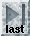
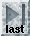
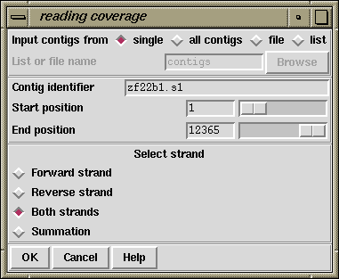

 
This option can be invoked from the main gap4 View menu, in which case it appears as a single plot, or from the View menu of the Consistency Display in which case it will appear as part of the Consistency Display.
The number of readings which cover each base position along the contig are plotted as a histogram.
As can be seen in the dialogue below, the user can select the contigs(s)
to display, and whether to plot: Forward strand only, Reverse strand
only, Both strands or the Summation of both strands. In the example
shown above both strands have been plotted: forward in red and reverse
in black.

![[picture]](read_coverage_p,6in.png.html)
(Click for full size image)
Last generated on 25 April 2016.